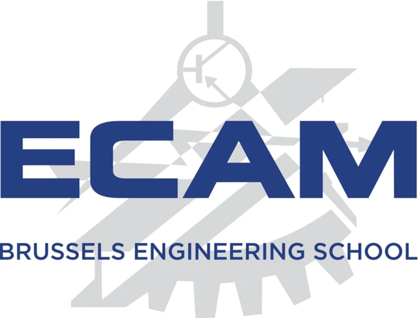

Chers Écamiens et Écamiennes,
Comme à son habitude, la Vulcania prépare les pulls ECAM officiels pour l’année académique 2025-2026.
Avant tout, nous aimerions recueillir votre avis afin de choisir le design final parmi
3 modèles proposés. Votre réponse nous permettra de sélectionner le design final et
de préparer ensuite l’ouverture des commandes pour l’ensemble des étudiants.
Pour participer au vote, il vous suffit de répondre à ce sondage avant le
jeudi 27 novembre 2025 :
Nous avons hâte de savoir lequel vous préférez et de vous voir porter votre nouveau pull !
Merci pour votre participation.
Bien cordialement,
La team Textile Vulcania
